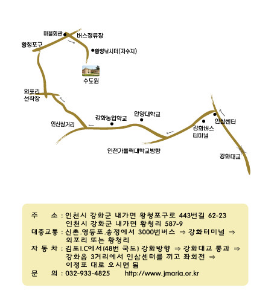

| 구분 | 단가(만 원) | 수량 | 금액(만 원) |
|---|---|---|---|
| 강의실 | 30 | 1 | 30 |
| 회의실 | 20 | - | - |
| 2인1실 | 16 | 7 | 112 |
| 1인실 | 8 | 3 | 24 |
| 1일3식 | 7 | 17 | 119 |
| 차량 | 3 | 5 | 15 |
| 다과 | 3 | 17 | 51 |
| 합계 | - | - | 351 |
※ 예상 비용은 참석자 수와 상황에 따라 추후 변경될 수 있습니다.
└ 당일 행사 지원을 위해, 자가 차량 봉사 가능하신 사목위원님은 협조 요청드립니다.
